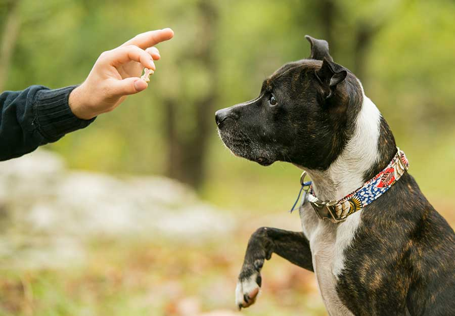

Basic Dog Training Commands
March 20, 2025

Teaching your dog basic commands not only improves their behavior but also strengthens the bond between you and your furry companion. These five foundational commands are essential for safety, communication, and a well-mannered pet.
1. Sit
The "Sit" command is often the first one dogs learn. It's useful for calming your dog before meals, walks, or greeting people.
How to teach:
- Hold a treat close to your dog’s nose.
- Slowly move your hand up, causing their head to follow the treat and their bottom to lower.
- Once they’re in a sitting position, say “Sit” and give the treat along with praise.
2. Stay
“Stay” teaches patience and self-control. It’s especially helpful when you need your dog to remain in one place.
How to teach:
- Ask your dog to sit.
- Open your palm in front of them and say “Stay.”
- Take a few steps back. If they stay, return and reward them.
- Gradually increase distance and duration over time.
3. Come
The “Come” command is vital for safety, especially if your dog is off-leash or in a risky situation.
How to teach:
- Put your dog on a leash and crouch down to their level.
- Say “Come” in an upbeat voice while gently pulling the leash.
- Reward them when they reach you with a treat and praise.
4. Down
“Down” is a calming command that helps control excitable or dominant behavior.
How to teach:
- Hold a treat in your closed hand and let your dog sniff it.
- Lower your hand to the floor and slide it forward.
- Once they lie down, say “Down” and reward them.
5. Leave It
“Leave it” prevents your dog from picking up dangerous or unwanted items, making it one of the most important commands for daily life.
How to teach:
- Place a treat in both hands. Show one closed fist and say “Leave it.”
- Ignore any attempts to get the treat until your dog stops trying.
- Once they back off, reward with the treat from the other hand.
Training Tips
- Keep sessions short (5–10 minutes) and consistent.
- Use positive reinforcement—treats, praise, and play.
- Be patient. Every dog learns at their own pace.
- End each session on a positive note.
Note: Always train in a distraction-free environment before trying commands outdoors or in public spaces.